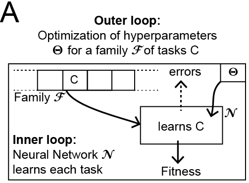
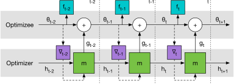
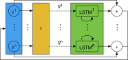
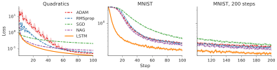
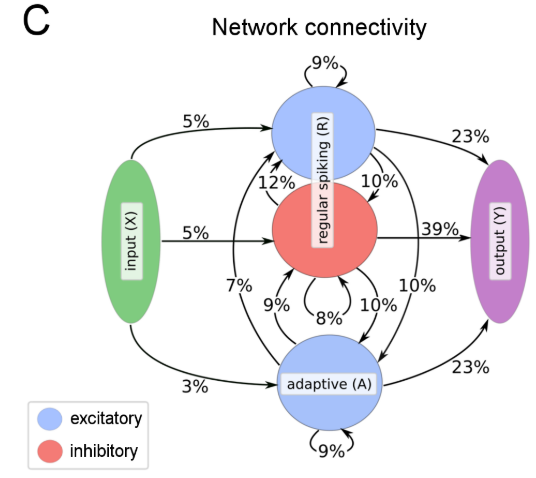
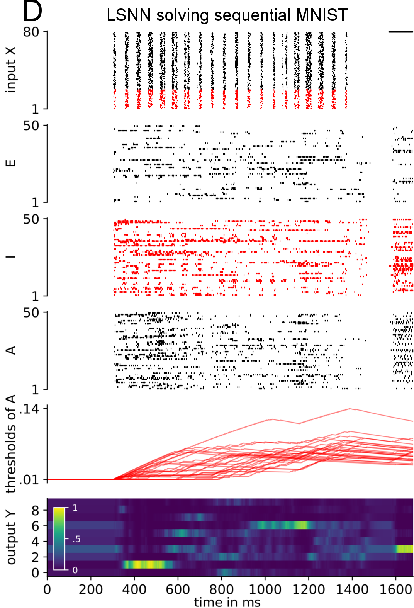
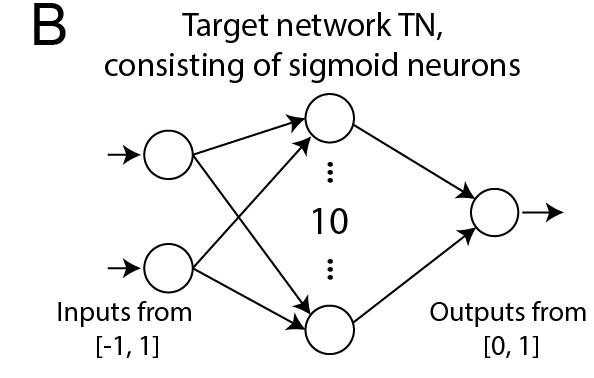
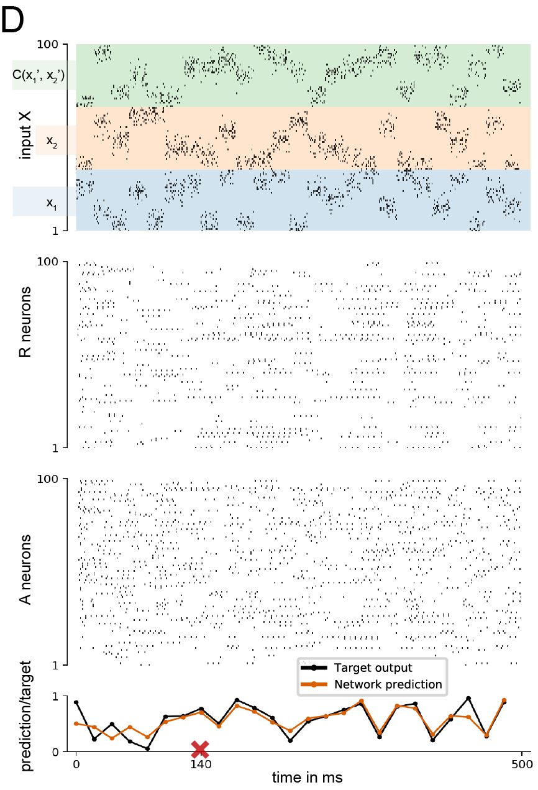
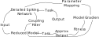
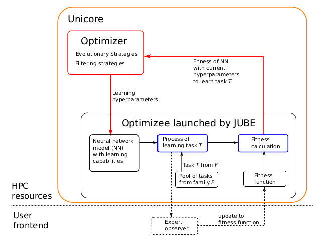

Learning to Learn (L2L) via optimization by optimization (L2LO)
Jülich-Aachen meeting 21.11.2018
Overview
- Introduction
- L2L (Andrychowicz et al. 2016)
- LSNN model
- L2L on LSNN (Bellec et al. 2018)
- Goals
Brief Histrory
- Early approaches (meta learning) already 1980/90's by e.g. Schimdhuber, Bengio
- Later approaches Younger, Hochreiter combined previous works
- Main idea: One network (meta-learner - optimizer, outer loop) learns to update another network (learner - optimizee, inner loop)
- Output of backpropagation from one network is fed into other learning network, training them jointly
Learning
In usual ML setting optimize the objective function: \[ \theta^* = arg \, min_{\theta \in \Theta}f(\theta_t) \]Done by handcrafted update rules (e.g. SGD, Momentum, ADAM):
\[ \theta_{t+1} = \theta -\alpha \nabla f(\theta_t) \]learn instead:
\[ \theta_{t+1} = \theta + g_t(\nabla f(\theta_t), \phi) \]| \[ \mathcal{L}(\phi) = \mathbb{E}_f\bigg[\sum^{T}_{t=1}w_tf(\theta_t)\bigg] \] | where |
$\theta_{t+1} = \theta_{t} + g_t$, $\begin{bmatrix} g_t \\ h_{t+1}\end{bmatrix} = m(\nabla_t, h_t, \phi)$ |
- Here, $g_t$ is an output of an RNN $m$ with state $h_t$
- $\nabla_t = \nabla_{\theta} f(\theta_t)$
- $\mathcal{L}(\phi)$ is minimized using gradient descent on $\phi$
- $\partial \mathcal{L} / \partial \phi$ computed by sampling a random function $f$
L2L Scheme
- outer loop can be any optimization algorithm
Computational graph
|  |
|
LSTM module
- Introduced by Hochreiter and Schmidhuber (1997)

|

|
- Register like with trained rules for writing and reading to or from the registers
- The value in the memory cell of an LSTM module remains unchanged, unless the input gate is opened to let new values flow into it
Coordinatewise LSTM optimizer
Here one step|  |
|
- Input: optimizee gradient, $h_{t-1}$
- Output: Update for corresponding optimizee parameter
Experiments
- 20 hidden units, 2 layer
- Truncated BPTT, early stopping
- Minimization via ADAM
LSNN model
- Consists of population $R$ of exc./inh. LIF (leaky integrate and fire) neurons
- pop. $A$ of exc. LIF neurons, temporarily excitability reduced through preceeding firing activity
- $X$ is external input, $Y$ external linear readout neurons
Fitting model for adapting neurons
Firing threshold $B_j(t)$ of neuron $j$ increases by some fixed amount $\beta/ \tau_{\alpha, j}$ for each spike of neuron $j$, then decays exponentially back to a baseline value $b^0_j$ with a time constant $\tau_{\alpha, j}$
$$ B_j(t) = b{_j}^{0} + \beta b_j(t) \\ b_j (t + \delta t) = \rho_j b_j(t) + (1 - \rho_j)z_j(t) $$
- $\delta t = 1\,ms$ step size
- $\rho_j = \exp(- \frac{\delta t}{\tau_{\alpha,j}})$
- $z$ spiketrain
Backpropagation through time (BPTT) in adapting neurons
Back propagating gradients through discontinuous spikes:- Simulated dynamics in discrete time
- The spikes are expressed using a binary step function H of the scaled membrane voltage v(t) (v crosses the threshold at 0 and resting potential is -1)
- The gradients are propagated through step functions with a pseudo-derivative
- The slow dynamics of the adaptive threshold replaces the memory units of LSTM
- Back propagating through many timesteps is subject to exploding-vanishing gradients
BPTT, DEEP R on RSNNs and LSNNs
- Optimization of synaptic weights and connectivity matrix of LSNN
- Optimization algorithm is BPTT, not biological plausible (cf. Bengio 2015)
- "Gradient is backpropagated through spikes by replacing the non-existent derivative of the membrane potential at the time of a spike by a pseudo-derivative that smoothly increases from 0 to 1, and then decays back to 0."
- integrated BPTT with deep rewiring (DEEP R, Bellec et al. 2018, ICLR)
Dynamics of LSNN
|  |
|
L2L on LSNNs
|  |
- Inner loop: within $\mathcal{N}$, learns the structure of $C$ to maximize $f(C)$, $\Theta$ is fixed
- Outer loop: optimizes $\Theta$ to maximize the fitness for all tasks in $F$
- $\Theta$, synaptic weights, adaptation are learnt in outer loop
Training procedure
- LSNN fed with new sample $(x_1, x_2)$ and target output $C^{\prime}(x^{\prime}_1, x^{\prime}_2)$ from previous example
- generates $C(x_1, x_2)$ as target output
- 500 steps, each step lasts 20 ms
- BPTT minimizes MSE between LSNN output and target
- using gradients computed over batches of 10 episodes (= 1 iteration of outer loop)
- After training weights of LSNN remains fixed, it has to learn input/output behaviour of a target network only with its short-term memory and dynamics
- Meaning LSNN is still adaptive, uses short term memory $\Rightarrow$ one-/few-shot learning
Dynamics of L2L LSNN
Goals
Recap of last meeting
|  |  |
|
|
- How does the system learn?
- What are good fitness functions, what is a good performance measure?
- Depends also on the system architecture:
| SNN | STDP, Plasticity |
| ANN | gradient descent, momentum methods |
Further ideas
- Generative Models such as Variational Auto-encoders or GANs to reduce the hyper parameter space dimension to latent spaces (Perceptual Manifolds)
- In terms of SNN mean field models are interesting, they are reduced models and can be applied for optimized approaches
- Approaches we have:
- gradient descent via BPTT
- gradient free: Evolutionary strategies (incl. genetic algoriths, random walk)
Literature
- Andrychowicz, Marcin, et al. "Learning to learn by gradient descent by gradient descent." Advances in Neural Information Processing Systems. 2016.
- Bellec, Guillaume, et al. "Long short-term memory and Learning-to-learn in networks of spiking neurons." arXiv preprint arXiv:1803.09574 (2018).
- Bellec, Guillaume, et al. "Deep Rewiring: Training very sparse deep networks." arXiv preprint arXiv:1711.05136 (2017).
Further reading
- Chen, Yutian, et al. "Learning to learn without gradient descent by gradient descent." arXiv preprint arXiv:1611.03824 (2016)
- Metz, Luke, et al. "Learning Unsupervised Learning Rules." arXiv preprint arXiv:1804.00222 (2018)
- Huh, Dongsung, and Terrence J. Sejnowski. "Gradient descent for spiking neural networks." arXiv preprint arXiv:1706.04698 (2017).
- Chung, SueYeon, et al. "Learning data manifolds with a cutting plane method." Neural computation 30.10 (2018): 2593-2615.
- Chung, SueYeon, Daniel D. Lee, and Haim Sompolinsky. "Classification and geometry of general perceptual manifolds." Physical Review X 8.3 (2018): 031003.
- Huh, Dongsung, and Terrence J. Sejnowski. "Gradient descent for spiking neural networks." arXiv preprint arXiv:1706.04698 (2017).
- Maddison, Chris J., et al. "Hamiltonian Descent Methods." arXiv preprint arXiv:1809.05042 (2018).
- Bengio, Yoshua, et al. "Towards biologically plausible deep learning." arXiv preprint arXiv:1502.04156 (2015).
- Finn, Chelsea, Pieter Abbeel, and Sergey Levine. "Model-agnostic meta-learning for fast adaptation of deep networks." arXiv preprint arXiv:1703.03400 (2017).
- Li, Zhenguo, et al. "Meta-sgd: Learning to learn quickly for few shot learning." arXiv preprint arXiv:1707.09835 (2017).
- Pandarinath, Chethan, et al. "Inferring single-trial neural population dynamics using sequential auto-encoders." Nature methods (2018): 1.
- Arjovsky, Martin, and Léon Bottou. "Towards principled methods for training generative adversarial networks." arXiv preprint arXiv:1701.04862 (2017).
- Scellier B and Bengio Y (2017) Equilibrium Propagation: Bridging the Gap between Energy-Based Models and Backpropagation. Front. Comput. Neurosci. 11:24. doi: 10.3389/fncom.2017.00024
- Bartunov, Sergey, et al. "Assessing the scalability of biologically-motivated deep learning algorithms and architectures." arXiv preprint arXiv:1807.04587 (2018).
- Zhang, Jingwei, Tongliang Liu, and Dacheng Tao. "An Information-Theoretic View for Deep Learning." arXiv preprint arXiv:1804.09060 (2018).
- Choromanska, Anna, et al. "The loss surfaces of multilayer networks." Artificial Intelligence and Statistics. 2015.
- Du, Simon S., et al. "Gradient descent provably optimizes over-parameterized neural networks." arXiv preprint arXiv:1810.02054 (2018).
- Du, Simon S., et al. "Gradient Descent Finds Global Minima of Deep Neural Networks." arXiv preprint arXiv:1811.03804 (2018).